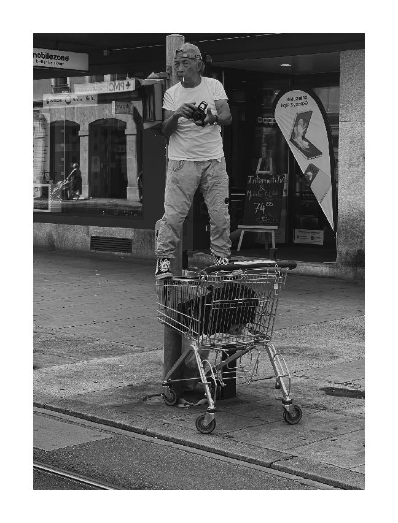

Independent platform for art, architecture, image and sound · Switzerland
DOMUS
CULTURA
A cultural house in motion.
Photography by Ben Taleb
Sound by Juice+


01 / Current
Cover story · PhotographyGood Morning World
A visual journal of architecture, public space and the people who move through it.
Enter the project ↗Open call / Artists
Should we know
your work?
Domus Cultura accepts rolling submissions for editorial features, studio visits, events and future collaborations.
Submit your practice ↗07 / Contact